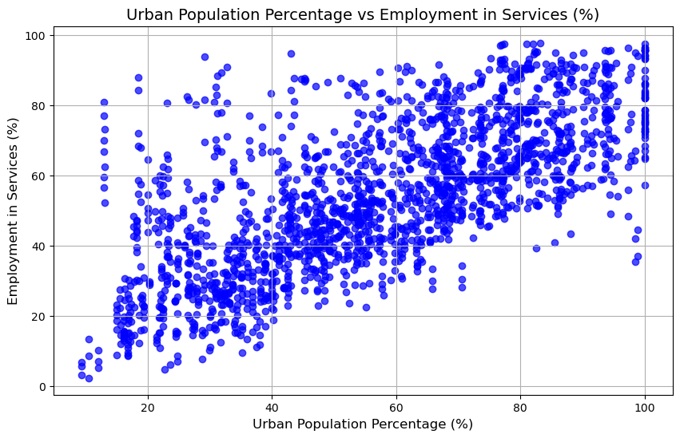
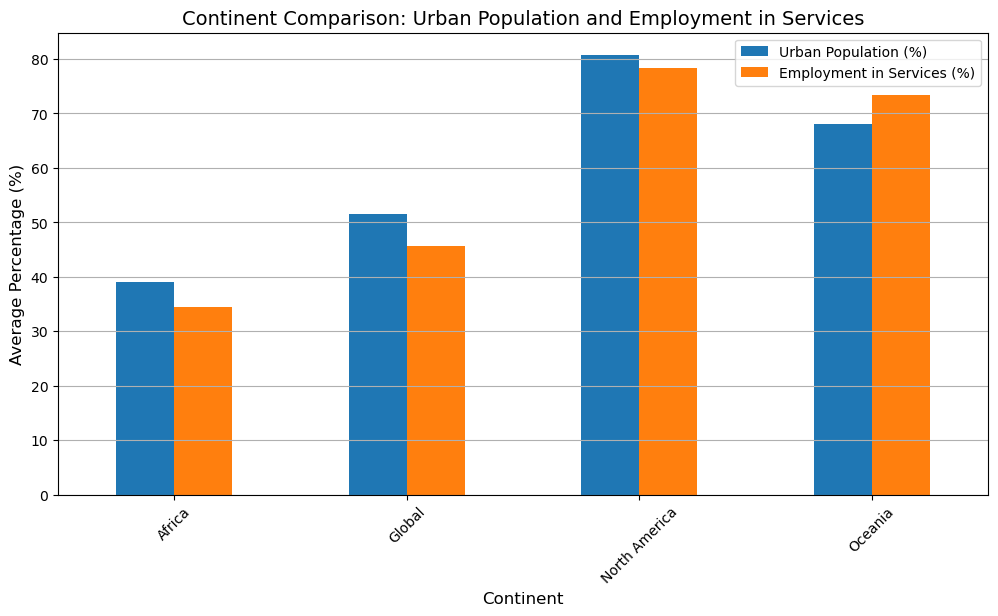

Project 2#
Import libraries#
import pandas as pd
import matplotlib.pyplot as plt
Load dataset and learn what they contain#
employmentdata = pd.read_csv('C:\\Users\\magda\\Documents\\MPA\\Fall 2024\\INAFU6006 - Computing in Context\\Project 2\\SYB66_200_202310_Employment.csv', encoding='latin1')
print("Employment Data Preview:")
print(employmentdata.head())
Employment Data Preview:
T18 Employment by economic activity Unnamed: 2 \
0 Region/Country/Area NaN Year
1 1 Total, all countries or areas 2005
2 1 Total, all countries or areas 2005
3 1 Total, all countries or areas 2005
4 1 Total, all countries or areas 2005
Unnamed: 3 Unnamed: 4 Unnamed: 5 \
0 Series Value Footnotes
1 Employment by industry: Agriculture (%) Male a... 36.9 Estimate.
2 Employment by industry: Industry (%) Male and ... 21.2 Estimate.
3 Employment by industry: Services (%) Male and ... 41.9 Estimate.
4 Employment by industry: Agriculture (%) Male 37.3 Estimate.
Unnamed: 6
0 Source
1 International Labour Organization (ILO), Genev...
2 International Labour Organization (ILO), Genev...
3 International Labour Organization (ILO), Genev...
4 International Labour Organization (ILO), Genev...
populationdata = pd.read_csv('C:\\Users\\magda\\Documents\\MPA\\Fall 2024\\INAFU6006 - Computing in Context\\Project 2\\SYB61_253_Population Growth Rates in Urban areas and Capital cities.csv', encoding='latin1')
print("\nPopulation Data Preview:")
print(populationdata.head())
Population Data Preview:
T03 \
0 Region/Country/Area
1 1
2 1
3 1
4 1
Population and rates of growth in urban areas and capital cities Unnamed: 2 \
0 NaN Year
1 Total, all countries or areas 2005
2 Total, all countries or areas 2005
3 Total, all countries or areas 2005
4 Total, all countries or areas 2010
Unnamed: 3 Unnamed: 4 \
0 Series Capital City
1 Urban population (percent) NaN
2 Urban population (percent growth rate per annum) NaN
3 Rural population (percent growth rate per annum) NaN
4 Urban population (percent) NaN
Unnamed: 5 Unnamed: 6 \
0 Capital City footnote Value
1 NaN 49.2
2 NaN 2.3
3 NaN 0.3
4 NaN 51.7
Unnamed: 7 \
0 Footnotes
1 NaN
2 Data refers to a 5-year period preceding the r...
3 Data refers to a 5-year period preceding the r...
4 NaN
Unnamed: 8
0 Source
1 United Nations Population Division, New York, ...
2 United Nations Population Division, New York, ...
3 United Nations Population Division, New York, ...
4 United Nations Population Division, New York, ...
Cleaning the dataset and renaming columns#
employmentcleaned = employmentdata[
["Employment by economic activity", "Unnamed: 2", "Unnamed: 3", "Unnamed: 4"]
].rename(columns={
"Employment by economic activity": "Region",
"Unnamed: 2": "Year",
"Unnamed: 3": "Series",
"Unnamed: 4": "Value"
})
employmentcleaned = employmentcleaned.dropna()
print("\nCleaned Employment Data Preview:")
print(employmentcleaned.head())
Cleaned Employment Data Preview:
Region Year \
1 Total, all countries or areas 2005
2 Total, all countries or areas 2005
3 Total, all countries or areas 2005
4 Total, all countries or areas 2005
5 Total, all countries or areas 2005
Series Value
1 Employment by industry: Agriculture (%) Male a... 36.9
2 Employment by industry: Industry (%) Male and ... 21.2
3 Employment by industry: Services (%) Male and ... 41.9
4 Employment by industry: Agriculture (%) Male 37.3
5 Employment by industry: Industry (%) Male 24.1
populationcleaned = populationdata[
["Population and rates of growth in urban areas and capital cities", "Unnamed: 2", "Unnamed: 3", "Unnamed: 6"]
].rename(columns={
"Population and rates of growth in urban areas and capital cities": "Region",
"Unnamed: 2": "Year",
"Unnamed: 3": "Series",
"Unnamed: 6": "Value"
})
populationcleaned = populationcleaned.dropna()
print("\nCleaned Population Data Preview:")
print(populationcleaned.head())
Cleaned Population Data Preview:
Region Year \
1 Total, all countries or areas 2005
2 Total, all countries or areas 2005
3 Total, all countries or areas 2005
4 Total, all countries or areas 2010
5 Total, all countries or areas 2010
Series Value
1 Urban population (percent) 49.2
2 Urban population (percent growth rate per annum) 2.3
3 Rural population (percent growth rate per annum) 0.3
4 Urban population (percent) 51.7
5 Urban population (percent growth rate per annum) 2.2
Filter data needed#
employmentfiltered = employmentcleaned[
employmentcleaned["Series"].str.contains("Services", na=False)
]
print("\nFiltered Employment Data:")
print(employmentfiltered.head())
Filtered Employment Data:
Region Year \
3 Total, all countries or areas 2005
6 Total, all countries or areas 2005
9 Total, all countries or areas 2005
12 Total, all countries or areas 2010
15 Total, all countries or areas 2010
Series Value
3 Employment by industry: Services (%) Male and ... 41.9
6 Employment by industry: Services (%) Male 38.7
9 Employment by industry: Services (%) Female 46.8
12 Employment by industry: Services (%) Male and ... 44.5
15 Employment by industry: Services (%) Male 40.3
populationfiltered = populationcleaned[
populationcleaned["Series"].str.contains("Urban population \\(percent\\)", na=False)
]
print("\nFiltered Population Data:")
print(populationfiltered.head())
Filtered Population Data:
Region Year Series Value
1 Total, all countries or areas 2005 Urban population (percent) 49.2
4 Total, all countries or areas 2010 Urban population (percent) 51.7
7 Total, all countries or areas 2015 Urban population (percent) 53.9
10 Total, all countries or areas 2018 Urban population (percent) 55.3
11 Africa 2005 Urban population (percent) 36.9
Merge the datasets based on “Region” and “Year” columns#
mergeddata = pd.merge(
employmentfiltered,
populationfiltered,
on=["Region", "Year"],
suffixes=("employment", "population")
)
print("\nMerged Data Preview:")
print(mergeddata.head())
Merged Data Preview:
Region Year \
0 Total, all countries or areas 2005
1 Total, all countries or areas 2005
2 Total, all countries or areas 2005
3 Total, all countries or areas 2010
4 Total, all countries or areas 2010
Seriesemployment Valueemployment \
0 Employment by industry: Services (%) Male and ... 41.9
1 Employment by industry: Services (%) Male 38.7
2 Employment by industry: Services (%) Female 46.8
3 Employment by industry: Services (%) Male and ... 44.5
4 Employment by industry: Services (%) Male 40.3
Seriespopulation Valuepopulation
0 Urban population (percent) 49.2
1 Urban population (percent) 49.2
2 Urban population (percent) 49.2
3 Urban population (percent) 51.7
4 Urban population (percent) 51.7
mergeddata["Valueemployment"] = pd.to_numeric(mergeddata["Valueemployment"], errors="coerce")
mergeddata["Valuepopulation"] = pd.to_numeric(mergeddata["Valuepopulation"], errors="coerce")
print("\nData Types After Conversion:")
print(mergeddata.dtypes)
Data Types After Conversion:
Region object
Year object
Seriesemployment object
Valueemployment float64
Seriespopulation object
Valuepopulation float64
dtype: object
Visualize data in a Scatter Plot#
plt.figure(figsize=(10, 6))
plt.scatter(
mergeddata["Valuepopulation"],
mergeddata["Valueemployment"],
color="blue", alpha=0.7
)
plt.title("Urban Population Percentage vs Employment in Services (%)", fontsize=14)
plt.xlabel("Urban Population Percentage (%)", fontsize=12)
plt.ylabel("Employment in Services (%)", fontsize=12)
plt.grid(True)
plt.show()

This scatter plot shows a clear relation between the percentage of urban population and employment in services. As the urban population grows, more peoplework in the services sector. This is especially true in highly urbanized areas, where most jobs are in services, reflecting a shift from agriculture or industry to services in more developed economies.
Group regions#
continent_mapping = {
"Total, all countries or areas": "Global",
"Africa": "Africa",
"Asia": "Asia",
"Europe": "Europe",
"Latin America and the Caribbean": "Latin America",
"Northern America": "North America",
"Oceania": "Oceania"
}
mergeddata["Continent"] = mergeddata["Region"].map(continent_mapping)
continentdata = mergeddata[~mergeddata["Continent"].isna()]
continentsum = continentdata.groupby("Continent")[["Valuepopulation", "Valueemployment"]].mean()
continentsum.plot(kind="bar", figsize=(12, 6))
plt.title("Continent Comparison: Urban Population and Employment in Services", fontsize=14)
plt.xlabel("Continent", fontsize=12)
plt.ylabel("Average Percentage (%)", fontsize=12)
plt.xticks(rotation=45)
plt.legend(["Urban Population (%)", "Employment in Services (%)"])
plt.grid(axis="y")
plt.show()

The bar chart shows the differences in urban population and employment in services between continents. Africa has the lowest levels of urbanization and service jobs, which reflects its rural and agriculture-based economy. North America and Oceania have high urban populations and many service jobs, which is common in developed regions. The global average helps compare the continents.